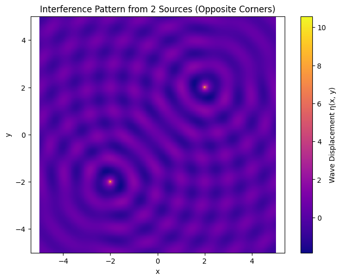
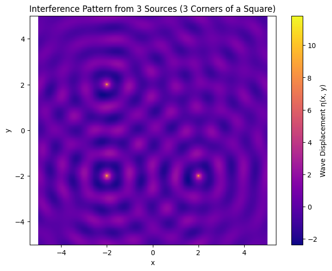

Sure! Let's walk through a clear explanation of the problem and then dive into interference pattern simulations for a square setup using 2 and 3 point sources.
📝 Problem Explanation: Interference Patterns on a Water Surface
Goal:
Simulate and visualize wave interference patterns from multiple point wave sources placed at the vertices of a regular polygon (e.g., triangle, square, etc.).
Each wave source generates a 2D wave given by this formula:
Where:
\(A\) is the amplitude
\(r_i = \sqrt{(x - x_i)^2 + (y - y_i)^2}\) is the distance from the source \(i\) to point \((x, y)\)
\(k = \frac{2\pi}{\lambda}\) is the wave number
\(\omega = 2\pi f\) is the angular frequency
\(\phi_i\) is the initial phase (we can assume it's zero for all sources in coherent case)
💡 Physical Context:
When multiple waves overlap in space and time, interference occurs: - Constructive interference when wave peaks align (bright spots) - Destructive interference when peaks meet troughs (dark zones)
🧪 Example: Simulate a Square with 2 and 3 Sources
We'll use Python and Matplotlib to simulate two cases: - 2 sources (opposite corners of a square) - 3 sources (3 corners of a square)
▶ Case 1: 2 Point Sources (Opposite corners of a square)
import numpy as np
import matplotlib.pyplot as plt
# Constants
A = 1.0
λ = 1.0
k = 2 * np.pi / λ
f = 1.0
ω = 2 * np.pi * f
t = 0 # snapshot in time
φ = 0
# Grid setup
x = np.linspace(-5, 5, 500)
y = np.linspace(-5, 5, 500)
X, Y = np.meshgrid(x, y)
# 2 sources at opposite corners of a square
L = 4
sources_2 = [
(-L/2, -L/2),
( L/2, L/2)
]
# Superposition of 2 sources
η_2 = np.zeros_like(X)
for (x0, y0) in sources_2:
R = np.sqrt((X - x0)**2 + (Y - y0)**2)
η_2 += A / np.sqrt(R + 1e-6) * np.cos(k * R - ω * t + φ)
# Plot 2-source pattern
plt.figure(figsize=(8, 6))
plt.pcolormesh(X, Y, η_2, shading='auto', cmap='plasma')
plt.colorbar(label='Wave Displacement η(x, y)')
plt.title('Interference Pattern from 2 Sources (Opposite Corners)')
plt.xlabel('x')
plt.ylabel('y')
plt.axis('equal')
plt.show()

▶ Case 2: 3 Point Sources (3 corners of a square)
# 3 sources at three corners of a square
sources_3 = [
(-L/2, -L/2),
( L/2, -L/2),
(-L/2, L/2)
]
# Superposition of 3 sources
η_3 = np.zeros_like(X)
for (x0, y0) in sources_3:
R = np.sqrt((X - x0)**2 + (Y - y0)**2)
η_3 += A / np.sqrt(R + 1e-6) * np.cos(k * R - ω * t + φ)
# Plot 3-source pattern
plt.figure(figsize=(8, 6))
plt.pcolormesh(X, Y, η_3, shading='auto', cmap='plasma')
plt.colorbar(label='Wave Displacement η(x, y)')
plt.title('Interference Pattern from 3 Sources (3 Corners of a Square)')
plt.xlabel('x')
plt.ylabel('y')
plt.axis('equal')
plt.show()

🔎 Observations:
- With 2 sources, the pattern is more symmetric and shows classic two-point interference (like in Young’s double slit).
- 3 sources create a more complex pattern with asymmetries due to the uneven triangle shape.